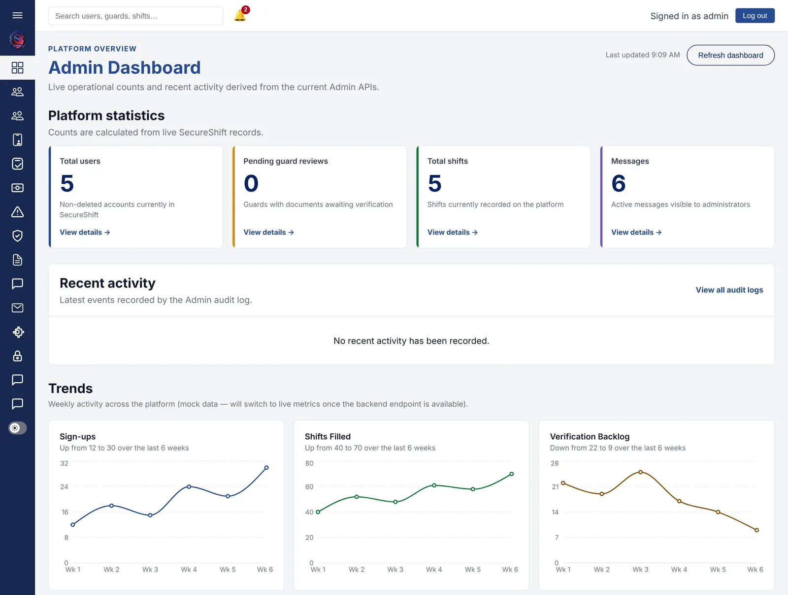
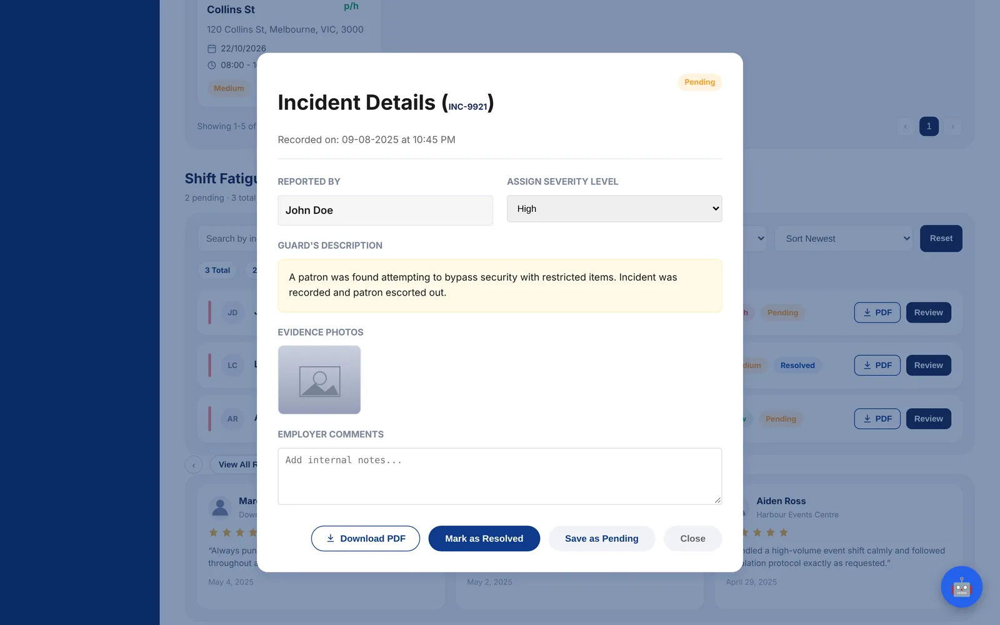
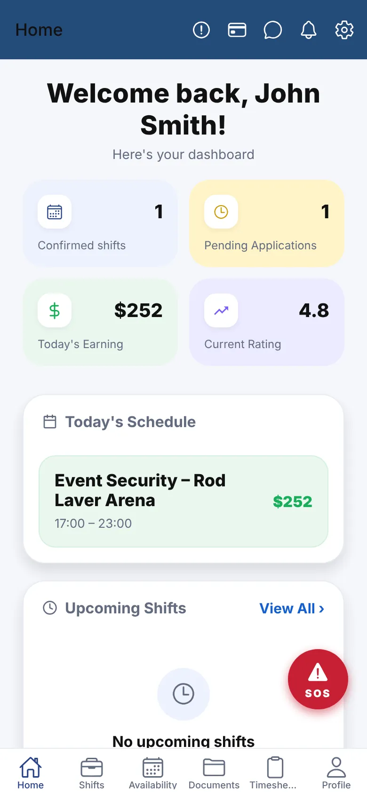

The admin panel
The admin panel gives platform admins visibility and control over shifts, messages and users. I delivered six features, each scoped as a ticket and shipped through a reviewed pull request.
- Analytics dashboard. Interactive charts that turn platform data into visual insight for admins.
- Global search bar. Admins can find users, guards and shifts in one place, and results link straight to the right record.
- Shift oversight table. Search and status filters for tracking shifts.
- Message moderation view. Server-paginated, with multi-parameter filters and a confirmation step before secure deletion.
- Session auto-logout. Inactive admins are signed out automatically.
- Docker. I containerised the admin panel for consistent builds and deployment.

A design decision
For the global search, there was no search endpoint available on the backend. Rather than wait, I chose a client-side search over the data the app already had, and linked each result directly to its record. It delivered the feature without blocking on another team.
Employer panel & guard app
Before the admin panel, I worked on the employer panel and the guard mobile app as a UI/UX designer and frontend developer.
- Create Shift. Redesigned it into a streamlined modal with an integrated calendar view.
- Shift creation on mobile. Extended shift creation to mobile, adapting the design for the guard app for a seamless, consistent experience across platforms.
- Login and sign-up. Removed unnecessary navigation and refined the layout for a cleaner, more intuitive flow.
- Shift Details modal. Built from the ground up, handling responsive styling and clear formatting of dates, times and pay to improve clarity for end users, and created the same for the mobile version.
- Incident reporting. Designed and delivered the workflow that lets employers review guard-submitted reports (photos, descriptions, shift details) and decide faster.
- Database. Worked with MongoDB, the database behind SecureShift.


How I worked
The work ran like a real engineering team: ticketed tasks, pull-request reviews, regular mentor check-ins and weekly meetings. I tracked work in Planner, kept leads updated in Teams, incorporated feedback into my designs, and resolved a merge conflict on my own.